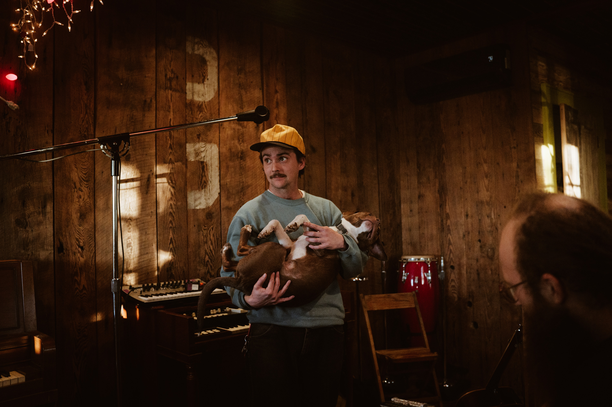

Presents:
Chris Acker
Oak Center General Store
Sunday, April 19 @ 6:00pm
In a genre full of tall tales and marketable lies, New Orleans’ Chris Acker crafts candid songs – weaving his wit and woes into a body of work that exposes the stale plight of the American Songster to the honest, and sometimes hilarious, light of day. In the tradition of Guthrie and Prine, Chris lends a quavering voice to the half-rotten romance of the unremarkable and unrefined. Regardless if you’re sitting by a backyard fire on a muggy Louisiana night or standing stage-side in some far flung town, when you hear Chris Acker playing, you’re hearing the end result of countless hours of observing the masters of the craft…and the end result of repeating their mistakes. From the folk revival through the golden age of country music, deafened by punk shows and brass bands alike, Chris’s songwriting is a nod to the absurd yet muted brilliance that inhabits the molded corners of the bars he patrons and cratered street he treads, paired with a pained honesty that merits a long second look. Acker released his fourth full-length album, Famous Lunch, on Gar Hole Records in October of 2024. Famous Lunch contains some of his best work yet: laid back, country-rockers like “Wouldn’t Do For You (Buddy)” and “Shit Surprise” (which Paste Magazine called a “song of the year contender” in 2024), a few raucous, bar-ready joints like “Don’t You Know (Who I Think I Am)” and “Bunn Machine”, and tender, folky triumphs like “Stubborn Eyes” and “Eyelash”, all showcasing Chris’ gift of building “vivid scenes at an impressively low word count” (No Depression). Acker tours solo or with his band The Growing Boys — Zach Thomas (bass), Nikolai Shveitser (pedal steel), Dave Hammer (guitar, vocals), Sam Gelband (drums, vocals), and occasionally Howe Pearson (piano).
$21.50 online
$24.00 at the door
Address: 67011 hwy 63, Lake City, MN 55041
ONLY PARK ON EAST SIDE OF 82 (general store side of the gravel road)
refer to picture on homepage if confused
The music venue itself is only accessed via staircase. The show will be played over speakers on the main floor for anyone who cannot or wishes not to go upstairs.
Tickets are required only for guests that go upstairs.
phone: 616-260-4924
oakcentergeneralstoremn@gmail.com